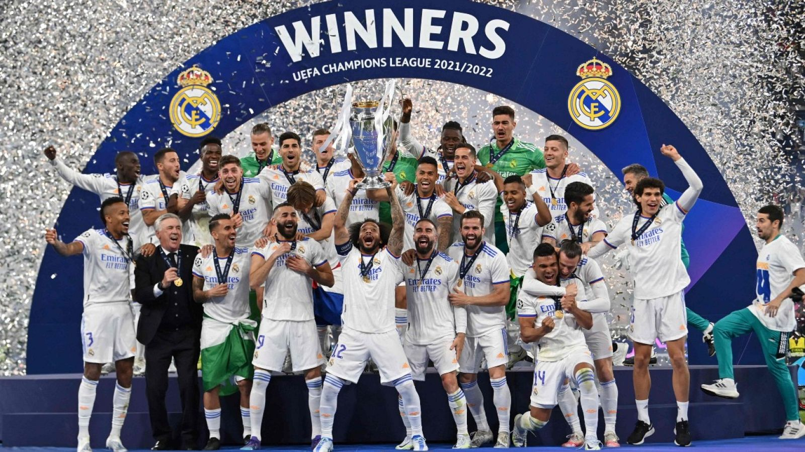

 Así queda la Champions tras la noche más loca del año en el fútbol europeo Por Redacción
La RFEF elige Chattanooga como sede de la selección española para la primera fase del Mundial de fútbol Mundial de EE.UU. México y Canadá 2026
El Benfica y la 'conjura' de Lisboa sacan a un paupérrimo Real Madrid del 'top 8' de la Champions ÓSCAR LÓPEZ GARCÍA
El Barça despierta a tiempo: remonta al Copenhague y es quinto en la primera fase de la Champions FELIPE FERNÁNDEZ
04:45 min Conexión Vintage 'Paulo Roberto Maravilla' Conexión Vintage 'Paulo Roberto Maravilla' 23:50h en Teledeporte y RTVE Play